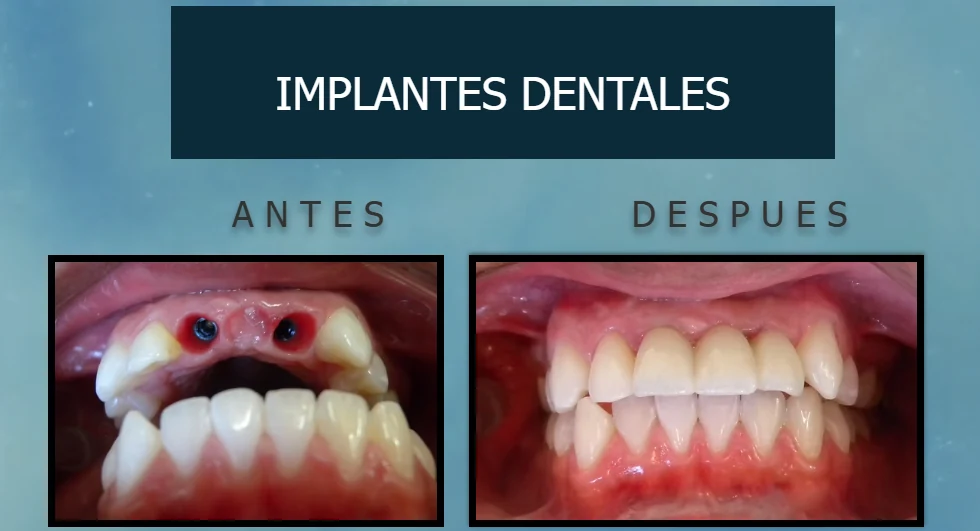

CASO CLÍNICO REAL
Rehabilitación bucal e implantes
Trabajo realizado en Lau Dental. El tratamiento se planifica de forma personalizada de acuerdo con las necesidades de cada paciente.
← Volver a tratamientos
Las imágenes corresponden a un caso clínico real. Los resultados pueden variar según las condiciones y necesidades de cada paciente.